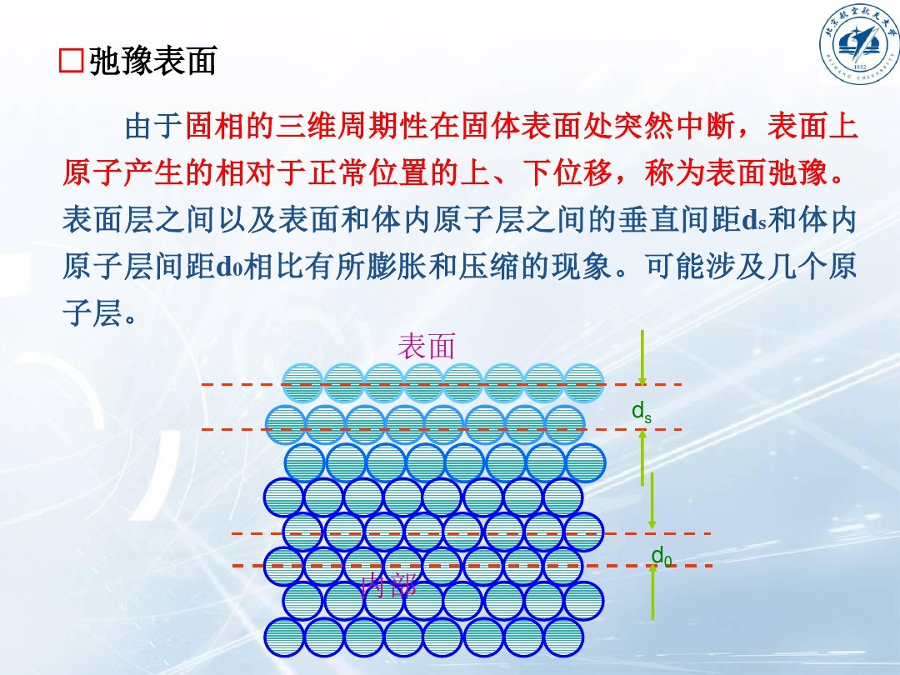

EPM相关的基础知识¶
引言¶
由于工作需要，目前需要调研EPM（empirical psudopotential method）经验赝势方法相关的一些文献与书籍，目的是能够了解此方法的基本原理，具体计算过程以及应用领域、具体效果。
但是由于基础知识积累有限，无法保证最基本的阅读能够通畅的进行，故在此整理一些相关的方法以及实验上的名词简介（不涉及量化的理论公式），以便感性理解，并且在日后有了一个宏观的了解之后在具体确定哪些内容需要深入了解。
注：内容大多来源于网络，严密性与准确性不能完全保证，故只能用作感性认识，不能当做学术定义。
名词列表¶
功函数¶
功函数(work function)又称功函、逸出功，在固体物理中被定义成：把一个电子从固体内部刚刚移到此物体表面所需的最少的能量。一般情况下功函数指的是金属的功函数，非金属固体很少会用到功函数的定义，而是用接触势来表达。
表面弛豫¶
由于固相的三维周期性在固体表面突然中断，表面上原子产生的相对于正常位置的上、下位移，称为表面弛豫。表面层之间以及表面和体内的原子层的垂直间距d_s和体内的原子层间距d_0相比有所膨胀与压缩的现象。这现象可能涉及几个原子层。 
HOMO LUMO¶
已占有电子的能级最高的轨道称为最高已占轨道，用HOMO表示。未占有电子的能级最低的轨道称为最低未占轨道，用LUMO表示。HOMO、LUMO统称为前线轨道，处在前线轨道上的电子称为前线电子。
HOMO：Highest Occupied Molecular Orbital
LUMO：Lower Unoccupied Molecular Orbital
前线轨道理论认为：分子中有类似于单个原子的“价电子”的电子存在，分子的价电子就是前线电子，因此在分子之间的化学反应过程中，最先作用的分子轨道是前线轨道，起关键作用的电子是前线电子。这是因为分子的HOMO对其电子的束缚较为松弛，具有电子给予体的性质，而LUMO则对电子的亲和力较强，具有电子接受体的性质，这两种轨道最易互相作用，在化学反应过程中起着极其重要作用。
抛物线能带&非抛物线能带¶
一般固体物理书上涉及的能带都是抛物线型的，就是在能带底部近似有E=\frac{k^2}{2m}的关系。但在一些模型里能带是锥形的，就像两个圆锥尖对尖顶在一起，就是线型的了E=vk，石墨烯中就是这种情况，尖对尖的那个点叫狄拉克点。至于什么情况下出现对应哪种，那要看具体哈密顿量了吧。石墨烯特殊的原因是它是六角晶格，是两套晶格的叠加，不是简单晶格。
紫外光电子能谱¶
紫外光电子能谱UPS（Ultroviolet Photoelectron Spectrometer）以紫外线为激发光源的光电子能谱。激发源的光子能量较低，该光子产生于激发原子或离子的退激，最常用的低能光子源为氦Ⅰ和氦Ⅱ。紫外光电子能谱主要用于考察气相原子、分子以及吸附分子的价电子结构。
角分辨电子谱¶
通过检测器在分析时的转动来实现**测量电子的能谱和电子能量角分布**的电子能谱法。
反键态¶
两种原子轨道组合成分子轨道时，可以出现能量较低的成键态和能量较高的反键态（Anti-bonding states）两种状态；成键态即构成共价键。在共价晶体中，成键态和反键态分别对应于不同的能带，例如Si的价带就对应于成键态，而导带就对应于反键态。
共轭梯度法¶
共轭梯度法（Conjugate Gradient）是介于最速下降法与牛顿法之间的一个方法，它仅需利用一阶导数信息，但克服了最速下降法收敛慢的缺点，又避免了牛顿法需要存储和计算Hesse矩阵并求逆的缺点，共轭梯度法不仅是解决大型线性方程组最有用的方法之一，也是解大型非线性最优化最有效的算法之一。在各种优化算法中，共轭梯度法是非常重要的一种。其优点是所需存储量小，具有步收敛性，稳定性高，而且不需要任何外来参数。
变分法¶
变分法是17世纪末发展起来的一门数学分支，是处理函数的数学领域，和处理数的函数的普通微积分相对。它最终寻求的是极值函数：它们使得泛函取得极大或极小值。变分法起源于一些具体的物理学问题，最终由数学家研究解决。有些曲线上的经典问题采用这种形式表达：一个例子是最速降线，在重力作用下一个粒子沿着该路径可以在最短时间从点A到达不直接在它底下的一点B。在所有从A到B的曲线中必须极小化代表下降时间的表达式。
快速傅里叶变换¶
快速傅里叶变换 (fast Fourier transform), 即利用计算机计算离散傅里叶变换（DFT)的高效、快速计算方法的统称，简称FFT。快速傅里叶变换是1965年由J.W.库利和T.W.图基提出的。采用这种算法能使计算机计算离散傅里叶变换所需要的乘法次数大为减少，特别是被变换的抽样点数N越多，FFT算法计算量的节省就越显著。
多孔硅¶
多孔硅（porous Si）是一种新型的一维纳米光子晶体材料，具有纳米硅原子簇为骨架的“量子海绵”状微结构，可以通过电化学阳极腐蚀或化学腐蚀单晶硅而形成。
布洛赫函数¶
布洛赫函数或者称为布洛赫波函数（Bloch （wave）function）是在周期性势场中运动的电子的Schrodinger方程的解。布洛赫函数是一种调幅平面波。布洛赫波的概念由菲利克斯·布洛赫在1928年研究晶态固体的导电性时首次提出的，但其数学基础在历史上却曾由乔治·威廉·希尔（1877年），加斯东·弗洛凯（1883年）和亚历山大·李雅普诺夫（1892年）等独立地提出。因此，类似性质的概念在各个领域有着不同的名称：常微分方程理论中称为弗洛凯理论（也有人称“李雅普诺夫-弗洛凯定理”）；一维周期性波动方程则有时被称为希尔方程。